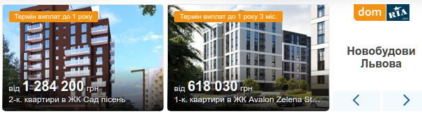

У справі щодо вбивства журналіста Павла Шеремета змінили підозру фігурантам провадження Яні Дугарь, Юлії Кузьменку та Андрію Антоненку.
Про це заявив на сторінці у “Фейсбуці” адвокат Леонід Маслов.
За його словами, також у справі з’явилися невідомі особи, які нібито “залучили” фігурантів до убивства.
Маслов зазначив, що зі справи прибрали “велич арійської раси”, “ультранаціоналістичні ідеї” та інший треш.
Тепер невстановлені особи діючи з ряду особистих мотивів вирішили створити вкрай резонансну подію з метою подальшої провокації численних акцій протесту. Ці невстановлені особи “залучили” А.Антоненко, Я.Дугарь і Ю.Кузьменко. Не за гроші (в кваліфікації вбивства відсутнє згадування про корисний мотив і посилання на пункти 6, 11 ч. 2 ст 115 ККУ – корисливий або замовний мотив)”, – розповів адвокат.
За його словами, Антоненко тепер не організатор, а простий виконавець за попередньою змовою, Кузьменко тепер лише заклала вибухівку разом з Антоненком, але не натискала на гачок.
“Тепер вони ще й знищили машину Субару і за невідомих обставин зберігали невідому вибухівку. Це додає ще 2 статті в обвинувачення”, – написав він.

Як писав “Вголос”, Зеленський відповів, чи готовий нести відповідальність за справу Шеремета (відео).